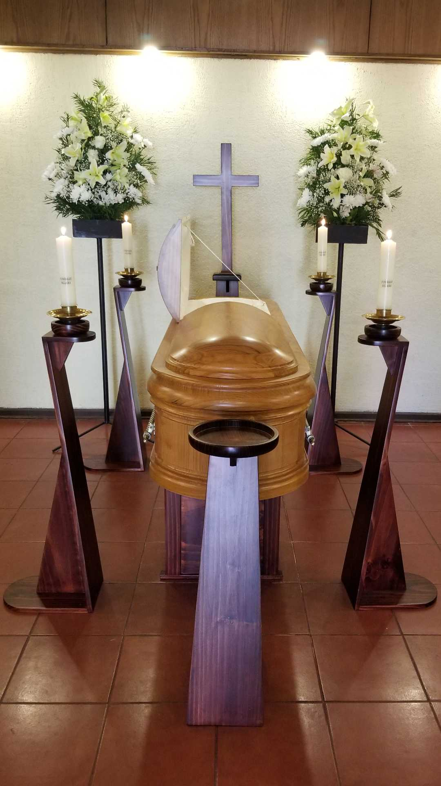

Servicios:
variedad de servicios para ayudar a las familias a planificar y llevar a cabo los servicios funerarios y conmemorativos de sus seres queridos fallecidos. Algunos de los servicios que una funeraria típicamente brinda incluyen:
Preparación del cuerpo:
Esto incluye el embalsamamiento, la restauración y el arreglo estético del cuerpo del difunto para el velorio y/o entierro.
Asesoramiento y planificación:
Los directores de funerarias suelen trabajar con las familias para ayudarles a planificar y organizar los detalles del servicio conmemorativo, incluyendo la selección del ataúd o urna, la ubicación y el horario del servicio, la música, las lecturas, etc.
Asistencia en la obtención de documentos legales:
Esto puede incluir la ayuda en la obtención de certificados de defunción, la preparación de documentos necesarios para la cremación o el entierro, y cualquier otro papeleo necesario.
Transporte:
La funeraria puede encargarse del transporte del cuerpo desde el lugar del fallecimiento hasta la funeraria, así como del transporte al cementerio o crematorio.
Servicios de velatorio o visita:
Muchas funerarias ofrecen instalaciones para servicios de velatorio o visitas, donde los amigos y familiares pueden reunirse para honrar y recordar al difunto.
Cremación o entierro:
Las funerarias pueden coordinar y facilitar la cremación o el entierro del cuerpo según los deseos de la familia.
Venta de ataúdes, urnas y productos conmemorativos:
Las funerarias suelen ofrecer una variedad de ataúdes, urnas y otros productos conmemorativos para que las familias elijan.
Servicios de apoyo emocional:
Los directores de funerarias a menudo brindan apoyo emocional y recursos para ayudar a las familias a enfrentar el duelo y la pérdida.
